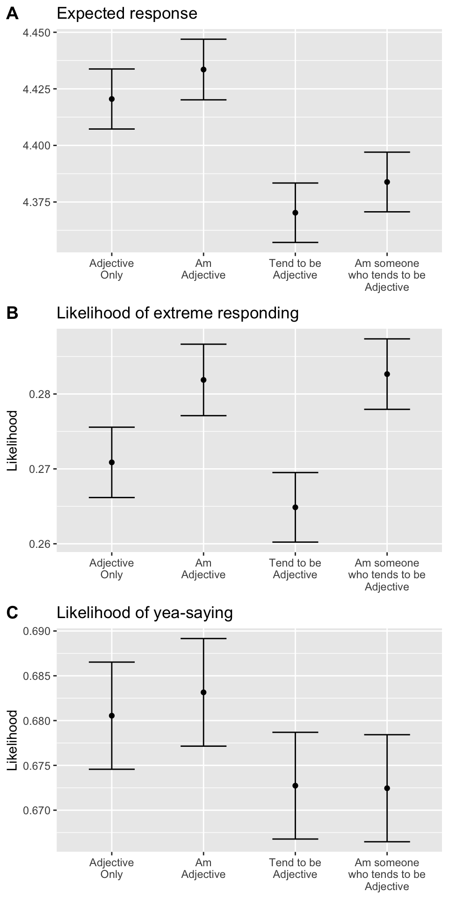

Does item format impact response syle?
Last updated 2023-05-21
The primary aims of this study are to evaluate the effects of item wording in online, self-report personality assessment. Specifically, we intend to consider the extent to which incremental wording changes may influence differences in participant response style. These wording changes will include a progression from using (1) trait-descriptive adjectives by themselves, (2) with the linking verb “to be” (Am…), (3) with the additional verb “to tend” (Tend to be…), and (4) with the pronoun “someone” (Am someone who tends to be…).
In this section, we test the impact of item format on three components of response style:
- Expected (average) response
- Likelihood of extreme responding
- Nay-saying
For these analyses, we use data from Blocks 1 and 2.
As a reminder, the (numeric) range of options for items was 1-6. Some items are reverse-scored. Those items are reckless, moody, worrying, nervous, careless, impulsive. For the majority of the analyses in this section, we use only the items included in the MIDI scales (i.e., we exclude items included from the Big Five Mini Markers – these are only tested in analyses related to yea-saying, below).
0.1 Deviations from preregistration
We switched out our plotting function from using the sjPlot package to using the marginaleffects package – to calculated the average predicted value for each group – and plotting those using ggplot2. We found that these estimates better accounted for the sample size and nesting in the multilevel models.
0.2 Expected response
We used a multilevel model. Our primary predictor was format. We use data from all three blocks; as a consequence, each person contributes either two or three data points for each of the trait descriptive adjectives. Thus, we nest responses within participant to account for this dependency. This is equivalent to a repeated measures ANOVA. However, in this omnibus model, we include responses to all trait adjectives. Thus, we must also account for adjective-specific contributions to variability. Finally, we include a random term for block. This is not hypothesized to account for significant variability, but we include this term in the event that block contributes significantly to ratings.
We use the aov function to calculate the amount of variability in response due to format.
mod.expected = items_df %>%
filter(block %in% c(1,2)) %>%
filter(!(item %in% bfmm)) %>%
glmmTMB(response~format + (1|item) + (1|proid) + (1|block),
data = .)
tidy(aov(mod.expected))## # A tibble: 5 × 6
## term df sumsq meansq statistic p.value
## <chr> <dbl> <dbl> <dbl> <dbl> <dbl>
## 1 format 3 39.7 13.2 10.9 0.000000381
## 2 item 30 17922. 597. 492. 0
## 3 proid 974 21100. 21.7 17.8 0
## 4 block 1 3.20 3.20 2.64 0.104
## 5 Residuals 59441 72163. 1.21 NA NAItem format was associated with participants’ expected responses to personality items \((F(3.00, 59,441.00) = 10.89, p = < .001)\). See Figure 1 for a visualization of this effect. In addition, Figure 2 shows the full distribution of responses across format. We note too that expected responses varied as a function of item \((F(30.00, 59,441.00) = 492.09, p = < .001)\) but not block \((F(1.00, 59,441.00) = 2.64, p = .104)\).
Figure 1: Predicted response on personality items by condition.
Figure 2: Distribution of responses by category.
0.2.1 One model for each adjective
We repeat this analysis separately for each trait.
mod_by_item = items_df %>%
filter(block %in% c(1,2)) %>%
filter(!(item %in% bfmm)) %>%
group_by(item) %>%
nest() %>%
mutate(mod = map(data, ~glmmTMB(response~format + (1|proid) + (1|block),
data = .))) %>%
mutate(aov = map(mod, aov))We apply a Holm correction to the p-values extracted from these analyses, to adjust for the number of tests conducted. We present results in Table 1, which is organized by whether items were reverse-coded prior to analysis.
| Item | Reverse Scored? | SS | MS | df1 | df2 | F | raw | adj |
|---|---|---|---|---|---|---|---|---|
| active | N | 9.86 | 3.29 | 3 | 971 | 14.37 | < .001 | < .001 |
| adventurous | N | 3.99 | 1.33 | 3 | 971 | 5.32 | .001 | .018 |
| broadminded | N | 8.52 | 2.84 | 3 | 971 | 12.39 | < .001 | < .001 |
| calm | N | 9.06 | 3.02 | 3 | 971 | 9.16 | < .001 | < .001 |
| caring | N | 6.21 | 2.07 | 3 | 971 | 9.39 | < .001 | < .001 |
| cautious | N | 1.27 | 0.42 | 3 | 971 | 1.14 | .333 | .666 |
| creative | N | 2.39 | 0.80 | 3 | 971 | 4.19 | .006 | .065 |
| curious | N | 3.45 | 1.15 | 3 | 971 | 4.90 | .002 | .028 |
| friendly | N | 2.82 | 0.94 | 3 | 971 | 4.80 | .003 | .030 |
| hardworking | N | 6.70 | 2.23 | 3 | 971 | 11.06 | < .001 | < .001 |
| helpful | N | 2.24 | 0.75 | 3 | 971 | 4.09 | .007 | .067 |
| imaginative | N | 3.23 | 1.08 | 3 | 971 | 5.00 | .002 | .027 |
| intelligent | N | 1.09 | 0.36 | 3 | 971 | 2.76 | .041 | .206 |
| lively | N | 9.40 | 3.13 | 3 | 971 | 10.40 | < .001 | < .001 |
| organized | N | 0.40 | 0.13 | 3 | 971 | 0.60 | .617 | .666 |
| outgoing | N | 12.85 | 4.28 | 3 | 971 | 15.89 | < .001 | < .001 |
| responsible | N | 8.79 | 2.93 | 3 | 971 | 14.49 | < .001 | < .001 |
| selfdisciplined | N | 7.71 | 2.57 | 3 | 971 | 10.79 | < .001 | < .001 |
| softhearted | N | 1.82 | 0.61 | 3 | 971 | 2.76 | .041 | .206 |
| sophisticated | N | 2.80 | 0.93 | 3 | 971 | 3.10 | .026 | .156 |
| sympathetic | N | 3.89 | 1.30 | 3 | 971 | 5.83 | .001 | .010 |
| talkative | N | 6.92 | 2.31 | 3 | 971 | 5.61 | .001 | .013 |
| thorough | N | 1.54 | 0.51 | 3 | 971 | 2.26 | .080 | .241 |
| thrifty | N | 3.15 | 1.05 | 3 | 971 | 3.59 | .013 | .120 |
| warm | N | 4.46 | 1.49 | 3 | 971 | 8.15 | < .001 | < .001 |
| careless | Y | 4.58 | 1.53 | 3 | 971 | 3.31 | .019 | .154 |
| impulsive | Y | 7.41 | 2.47 | 3 | 971 | 6.65 | < .001 | .003 |
| moody | Y | 2.28 | 0.76 | 3 | 971 | 3.32 | .019 | .154 |
| nervous | Y | 15.03 | 5.01 | 3 | 971 | 14.66 | < .001 | < .001 |
| reckless | Y | 16.87 | 5.62 | 3 | 971 | 18.79 | < .001 | < .001 |
| worrying | Y | 14.25 | 4.75 | 3 | 971 | 14.35 | < .001 | < .001 |
0.2.2 Pairwise t-tests for significant ANOVAs
When format was a significant predictor of expected response for an item (using the un-adjusted p-value here), we follow up with pairwise comparisons of format. Here we identify the items which meet this criteria. In the manuscript proper, we will only report the results for items in which format was significant, even after applying the Holm correction.
Differences in means and significance are shown in Table 2. These are also plotted in Figure 3.
sig_item = summary_by_item %>%
filter(p.value < .05)
sig_item = sig_item$item
sig_item## [1] "outgoing" "helpful" "reckless" "moody"
## [5] "friendly" "warm" "worrying" "responsible"
## [9] "lively" "caring" "nervous" "creative"
## [13] "hardworking" "imaginative" "softhearted" "calm"
## [17] "selfdisciplined" "intelligent" "curious" "active"
## [21] "careless" "broadminded" "impulsive" "sympathetic"
## [25] "talkative" "sophisticated" "adventurous" "thrifty"pairwise_response = mod_by_item %>%
#only significant items
filter(item %in% sig_item) %>%
#use marginaleffects package to calculate format means and run pairwise comparisons
mutate(
means = map(mod,
avg_predictions,
variables = "format"),
comp = map(mod,
avg_comparisons,
variables = list(format = "pairwise")))pairwise_response %>%
select(item, comp) %>%
unnest(cols = c(comp)) %>%
mutate(estimate = printnum(estimate),
estimate = case_when(
p.value < .001 ~ paste0(estimate, "***"),
p.value < .01 ~ paste0(estimate, "**"),
p.value < .05 ~ paste0(estimate, "*"),
TRUE ~ estimate
)) %>%
mutate(
contrast = str_replace(contrast, "Adjective\nOnly", "A"),
contrast = str_replace(contrast, "Am\nAdjective", "B"),
contrast = str_replace(contrast, "Tend to be\nAdjective", "C"),
contrast = str_replace(contrast, "Am someone\nwho tends to be\nAdjective", "D"),
contrast = str_remove_all(contrast, " ")
) %>%
select(item, contrast, estimate) %>%
pivot_wider(names_from = contrast, values_from = estimate) %>%
kable(booktabs = T,
caption = "Pairwise differences of means by format. A = Adjective only. B = Am Adjective. C = Tend to be Adjective. D = Am someone who tends to be Adjective. * p < .05, ** p < .01, *** p < .001") %>%
kable_styling()| item | B-A | D-A | D-B | D-C | C-A | C-B |
|---|---|---|---|---|---|---|
| outgoing | -0.02 | -0.10* | -0.08 | 0.00 | -0.10* | -0.08 |
| helpful | 0.01 | 0.04 | 0.02 | -0.03 | 0.07 | 0.06 |
| reckless | -0.01 | 0.00 | 0.01 | 0.07 | -0.07 | -0.06 |
| moody | 0.06 | 0.02 | -0.03 | 0.04 | -0.01 | -0.07 |
| friendly | -0.01 | -0.01 | 0.00 | 0.02 | -0.02 | -0.01 |
| warm | -0.02 | -0.01 | 0.02 | 0.01 | -0.02 | 0.01 |
| worrying | 0.04 | -0.04 | -0.08 | -0.05 | 0.02 | -0.02 |
| responsible | 0.00 | -0.12** | -0.12** | -0.12** | 0.00 | 0.00 |
| lively | 0.08 | -0.10* | -0.18*** | -0.04 | -0.05 | -0.14** |
| caring | 0.05 | 0.00 | -0.05 | 0.02 | -0.02 | -0.07 |
| nervous | -0.06 | -0.11* | -0.05 | -0.02 | -0.09 | -0.03 |
| creative | 0.00 | -0.06 | -0.06 | 0.00 | -0.06 | -0.06 |
| hardworking | 0.04 | -0.03 | -0.07 | -0.01 | -0.02 | -0.06 |
| imaginative | 0.04 | 0.01 | -0.03 | -0.03 | 0.04 | 0.00 |
| softhearted | 0.05 | 0.02 | -0.03 | -0.02 | 0.03 | -0.01 |
| calm | -0.07 | -0.11* | -0.04 | -0.09 | -0.02 | 0.05 |
| selfdisciplined | -0.01 | -0.10* | -0.10* | -0.09* | -0.01 | -0.01 |
| intelligent | -0.02 | 0.01 | 0.02 | -0.01 | 0.01 | 0.03 |
| curious | 0.04 | -0.01 | -0.06 | -0.02 | 0.01 | -0.04 |
| active | 0.01 | -0.04 | -0.05 | -0.03 | -0.01 | -0.02 |
| careless | -0.03 | 0.03 | 0.07 | 0.05 | -0.02 | 0.02 |
| broadminded | 0.04 | 0.04 | 0.01 | 0.01 | 0.03 | -0.01 |
| impulsive | 0.10 | 0.08 | -0.02 | -0.06 | 0.14** | 0.04 |
| sympathetic | 0.00 | 0.04 | 0.05 | 0.05 | -0.01 | -0.01 |
| talkative | 0.07 | -0.01 | -0.08 | -0.02 | 0.01 | -0.06 |
| sophisticated | 0.04 | -0.01 | -0.05 | -0.01 | 0.00 | -0.04 |
| adventurous | 0.00 | -0.05 | -0.05 | 0.00 | -0.05 | -0.05 |
| thrifty | 0.02 | 0.02 | -0.01 | 0.02 | -0.01 | -0.03 |
pairwise_response %>%
select(item, means) %>%
unnest(cols = c(means)) %>%
mutate(format = case_when(
format == "Adjective\nOnly" ~ 1,
format == "Am\nAdjective" ~ 2,
format == "Tend to be\nAdjective" ~ 3,
format == "Am someone\nwho tends to be\nAdjective" ~ 4)) %>%
ggplot(aes(x = format, y = estimate)) +
geom_point(stat = "identity") +
geom_line(alpha = .3) +
geom_errorbar(aes(ymin = conf.low, ymax = conf.high), width = .3) +
scale_x_continuous(breaks = c(1:4), labels= c("A","B","C","D")) +
labs(x = NULL, y = "Expected response") +
facet_wrap(~item) +
theme_pubr() Figure 3: Expected means by format and item. These items were significantly affected by response. A = Adjective only. B = Am Adjective. C = Tend to be Adjective. D = Am someone who tends to be Adjective.
0.3 Extreme responding
We define extreme responding as answering either a 1 (Very inaccurate) or a 6 (Very accurate). To model likelihood of extreme responding by format, we use logistic regression.
items_df = items_df %>%
mutate(extreme = case_when(
response == 1 ~ 1,
response == 6 ~ 1,
TRUE ~ 0
))mod.extreme = items_df %>%
filter(block %in% c(1,2)) %>%
filter(!(item %in% bfmm)) %>%
glmmTMB(extreme~format + (1|proid) + (1|item) + (1|block),
data = .,
family = "binomial")
tidy(aov(mod.extreme))## # A tibble: 5 × 6
## term df sumsq meansq statistic p.value
## <chr> <dbl> <dbl> <dbl> <dbl> <dbl>
## 1 format 3 3.28 1.09 7.29 6.92e- 5
## 2 proid 974 2899. 2.98 19.9 0
## 3 item 30 243. 8.10 54.1 1.47e-318
## 4 block 1 1.97 1.97 13.2 2.84e- 4
## 5 Residuals 59441 8901. 0.150 NA NAItem format was associated with extreme responding to personality items \((F(3.00, 59,441.00) = 7.29, p = < .001)\). See Figure 4 for a visualization of this effect. We note too that extreme responding varied as a function of item \((F(974.00, 59,441.00) = 19.88, p = < .001)\) and block \((F(1.00, 59,441.00) = 13.18, p = < .001)\).
Figure 4: Predicted response on personality items by condition.
0.3.1 One model for each adjective
We repeat this analysis separately for each trait.
mod_by_item_ex = items_df %>%
filter(block %in% c(1,2)) %>%
filter(!(item %in% bfmm)) %>%
group_by(item) %>%
nest() %>%
mutate(mod = map(data, ~glmmTMB(extreme~format + (1|proid) + (1|block),
data = .,
family = "binomial"))) %>%
mutate(aov = map(mod, aov))We apply a Holm correction to the p-values extracted from these analyses, to adjust for the number of tests conducted. We present results in Table 3, which is organized by whether items were reverse-coded prior to analysis.
| Item | Reverse Scored? | SS | MS | df | df2 | F | raw | adj |
|---|---|---|---|---|---|---|---|---|
| active | N | 0.49 | 0.16 | 3 | 971 | 4.29 | .005 | .098 |
| adventurous | N | 0.56 | 0.19 | 3 | 971 | 3.74 | .011 | .197 |
| broadminded | N | 0.91 | 0.30 | 3 | 971 | 6.33 | < .001 | .007 |
| calm | N | 0.10 | 0.03 | 3 | 971 | 0.53 | .663 | > .999 |
| caring | N | 1.91 | 0.64 | 3 | 971 | 10.25 | < .001 | < .001 |
| cautious | N | 0.11 | 0.04 | 3 | 971 | 0.57 | .634 | > .999 |
| creative | N | 1.15 | 0.38 | 3 | 971 | 7.96 | < .001 | .001 |
| curious | N | 0.45 | 0.15 | 3 | 971 | 2.65 | .048 | .714 |
| friendly | N | 0.67 | 0.22 | 3 | 971 | 3.51 | .015 | .238 |
| hardworking | N | 0.44 | 0.15 | 3 | 971 | 2.65 | .048 | .714 |
| helpful | N | 0.90 | 0.30 | 3 | 971 | 4.95 | .002 | .041 |
| imaginative | N | 1.19 | 0.40 | 3 | 971 | 7.11 | < .001 | .003 |
| intelligent | N | 0.99 | 0.33 | 3 | 971 | 6.87 | < .001 | .003 |
| lively | N | 0.15 | 0.05 | 3 | 971 | 1.05 | .370 | > .999 |
| organized | N | 0.08 | 0.03 | 3 | 971 | 0.56 | .639 | > .999 |
| outgoing | N | 0.05 | 0.02 | 3 | 971 | 0.38 | .770 | > .999 |
| responsible | N | 0.38 | 0.13 | 3 | 971 | 2.01 | .111 | .998 |
| selfdisciplined | N | 0.46 | 0.15 | 3 | 971 | 2.53 | .056 | .726 |
| softhearted | N | 0.41 | 0.14 | 3 | 971 | 2.11 | .097 | .974 |
| sophisticated | N | 0.02 | 0.01 | 3 | 971 | 0.12 | .950 | > .999 |
| sympathetic | N | 1.00 | 0.33 | 3 | 971 | 5.98 | < .001 | .011 |
| talkative | N | 0.85 | 0.28 | 3 | 971 | 5.10 | .002 | .035 |
| thorough | N | 0.40 | 0.13 | 3 | 971 | 2.45 | .062 | .745 |
| thrifty | N | 0.14 | 0.05 | 3 | 971 | 1.14 | .332 | > .999 |
| warm | N | 0.75 | 0.25 | 3 | 971 | 5.48 | .001 | .022 |
| careless | Y | 0.76 | 0.25 | 3 | 971 | 3.67 | .012 | .204 |
| impulsive | Y | 1.35 | 0.45 | 3 | 971 | 7.01 | < .001 | .003 |
| moody | Y | 0.33 | 0.11 | 3 | 971 | 2.38 | .068 | .749 |
| nervous | Y | 0.32 | 0.11 | 3 | 971 | 1.86 | .135 | > .999 |
| reckless | Y | 1.56 | 0.52 | 3 | 971 | 8.08 | < .001 | .001 |
| worrying | Y | 1.12 | 0.37 | 3 | 971 | 8.19 | < .001 | .001 |
0.3.2 Pairwise t-tests for significant ANOVAs
When format was a significant predictor of extreme responding for an item (using the un-adjusted p-value here), we follow up with pairwise comparisons of format. Here we identify the items which meet this criteria. In the manuscript proper, we will only report the results for items in which format was significant, even after applying the Holm correction.
sig_item_ex = summary_by_item_ex %>%
filter(p.value < .05)
sig_item_ex = sig_item_ex$item
sig_item_ex## [1] "helpful" "reckless" "friendly" "warm" "worrying"
## [6] "caring" "creative" "hardworking" "imaginative" "intelligent"
## [11] "curious" "active" "careless" "broadminded" "impulsive"
## [16] "sympathetic" "talkative" "adventurous"Then we create models for each adjective. We use the emmeans package to perform pairwise comparisons, again with a Holm correction on the p-values. We also plot the means and 95% confidence intervals of each mean. Likelihood differences are shown in Table 4 and likelihood estimates are in Figure 5.
pairwise_response_ex = mod_by_item_ex %>%
#only significant items
filter(item %in% sig_item_ex) %>%
#use marginaleffects package to calculate format means and run pairwise comparisons
mutate(
means = map(mod,
avg_predictions,
variables = "format",
type = "response"),
comp = map(mod,
avg_comparisons,
variables = list(format = "pairwise"),
type = "response"))pairwise_response_ex %>%
select(item, comp) %>%
unnest(cols = c(comp)) %>%
mutate(estimate = printnum(estimate),
estimate = case_when(
p.value < .001 ~ paste0(estimate, "***"),
p.value < .01 ~ paste0(estimate, "**"),
p.value < .05 ~ paste0(estimate, "*"),
TRUE ~ estimate
)) %>%
mutate(
contrast = str_replace(contrast, "Adjective\nOnly", "A"),
contrast = str_replace(contrast, "Am\nAdjective", "B"),
contrast = str_replace(contrast, "Tend to be\nAdjective", "C"),
contrast = str_replace(contrast, "Am someone\nwho tends to be\nAdjective", "D"),
contrast = str_remove_all(contrast, " ")
) %>%
select(item, contrast, estimate) %>%
pivot_wider(names_from = contrast, values_from = estimate) %>%
kable(booktabs = T,
caption = "Pairwise differences in likelihood of extreme responding by format. A = Adjective only. B = Am Adjective. C = Tend to be Adjective. D = Am someone who tends to be Adjective. * p < .05, ** p < .01, *** p < .001") %>%
kable_styling()| item | B-A | D-A | D-B | D-C | C-A | C-B |
|---|---|---|---|---|---|---|
| helpful | 0.03 | 0.02 | 0.00 | 0.00 | 0.02 | 0.00 |
| reckless | 0.02 | 0.03* | 0.01 | 0.04* | 0.00 | -0.02 |
| friendly | -0.01 | 0.01 | 0.02 | 0.01 | 0.00 | 0.01 |
| warm | 0.01 | -0.02 | -0.03* | -0.01 | 0.00 | -0.01 |
| worrying | 0.02 | 0.02 | 0.00 | 0.00 | 0.01 | 0.00 |
| caring | 0.02 | 0.03* | 0.01 | 0.02 | 0.02 | 0.00 |
| creative | 0.03* | 0.02 | -0.01 | 0.02 | 0.00 | -0.02 |
| hardworking | 0.00 | 0.00 | 0.00 | 0.01 | -0.01 | 0.00 |
| imaginative | -0.01 | 0.01 | 0.02 | 0.01 | 0.00 | 0.01 |
| intelligent | -0.01 | 0.00 | 0.01 | 0.00 | 0.00 | 0.01 |
| curious | 0.02 | 0.02 | 0.00 | 0.01 | 0.01 | -0.02 |
| active | 0.01 | 0.02 | 0.01 | 0.02 | 0.00 | -0.01 |
| careless | 0.01 | 0.03 | 0.01 | 0.00 | 0.02 | 0.01 |
| broadminded | 0.03* | 0.01 | -0.02 | -0.01 | 0.01 | -0.01 |
| impulsive | 0.03 | 0.05*** | 0.03 | 0.03* | 0.03 | 0.00 |
| sympathetic | 0.03 | 0.03 | 0.00 | 0.00 | 0.03 | 0.00 |
| talkative | -0.02 | 0.02 | 0.04** | 0.01 | 0.01 | 0.03 |
| adventurous | 0.02 | 0.05*** | 0.02* | 0.04** | 0.01 | -0.01 |
pairwise_response_ex %>%
select(item, means) %>%
unnest(cols = c(means)) %>%
mutate(format = case_when(
format == "Adjective\nOnly" ~ 1,
format == "Am\nAdjective" ~ 2,
format == "Tend to be\nAdjective" ~ 3,
format == "Am someone\nwho tends to be\nAdjective" ~ 4)) %>%
ggplot(aes(x = format, y = estimate)) +
geom_point(stat = "identity") +
geom_line(alpha = .3) +
geom_errorbar(aes(ymin = conf.low, ymax = conf.high), width = .3) +
scale_x_continuous(breaks = c(1:4), labels= c("A","B","C","D")) +
labs(x = NULL, y = "Probability of extreme response") +
facet_wrap(~item) +
theme_pubr() Figure 5: Extreme responding by format and item. These items were significantly affected by response. A = Adjective only. B = Am Adjective. C = Tend to be Adjective. D = Am someone who tends to be Adjective.
0.4 Yea-saying
We define yea-saying as answering “somewhat accurate” (4), “accurate” (5), or “very accurate” (6) to an item. To model likelihood of yea-saying by format, we use logistic regression. As a reminder, we reverse-scored socially desirable items during the cleaning stage. For those items, responses coded as 1, 2, or 3 represent agreement (accurate). Therefore, we code values 1, 2, and 3 as yea-saying for reverse-scored items, and values 4, 5, and 6 as yea-saying for all other items.
For these analyses, we only used a set of matched pairs of adjectives to create balanced subsets of positively and negatively keyed items.
items_df = items_df %>%
mutate(
yeasaying = case_when(
item %in% reverse & response %in% c(1:3) ~ 1,
!(item %in% reverse) & response %in% c(4:6) ~ 1,
TRUE ~ 0
))mod.yeasaying = items_df %>%
filter(block %in% c(1,2)) %>%
filter(item %in%
c("outgoing", "shy", "talkative", "quiet",
"sympathetic", "unsympathetic", "warm", "cold",
"cautious", "careless", "responsible", "reckless",
"worrying", "relaxed", "nervous", "calm",
"creative", "uncreative", "intelligent", "unintellectual")) %>%
glmmTMB(yeasaying~format + (1|proid) + (1|item) + (1|block),
data = .,
family = "binomial")
tidy(aov(mod.yeasaying))## # A tibble: 5 × 6
## term df sumsq meansq statistic p.value
## <chr> <dbl> <dbl> <dbl> <dbl> <dbl>
## 1 format 3 0.857 0.286 1.96 1.18e- 1
## 2 proid 974 552. 0.567 3.89 1.63e-305
## 3 item 19 2434. 128. 879. 0
## 4 block 1 0.0563 0.0563 0.386 5.34e- 1
## 5 Residuals 38002 5537. 0.146 NA NAItem format was unassociated with yea-saying \((F(3.00, 38,002.00) = 1.96, p = .118)\). See Figure 6 for a visualization of this effect. We note too that yea-saying varied as a function of item \((F(974.00, 38,002.00) = 3.89, p = < .001)\) and block \((F(1.00, 38,002.00) = 0.39, p = .534)\).
Figure 6: Likelihood of yea-saying to personality items by condition.
0.4.1 One model for each adjective
We repeat this analysis separately for each trait.
mod_by_item_ya = items_df %>%
filter(item %in%
c("outgoing", "shy", "talkative", "quiet",
"sympathetic", "unsympathetic", "warm", "cold",
"cautious", "careless", "responsible", "reckless",
"worrying", "relaxed", "nervous", "calm",
"creative", "uncreative", "intelligent", "unintellectual")) %>%
group_by(item) %>%
nest() %>%
mutate(mod = map(data, ~glmmTMB(yeasaying~format + (1|proid) + (1|block),
data = .,
family = "binomial"))) %>%
mutate(aov = map(mod, aov))We apply a Holm correction to the p-values extracted from these analyses, to adjust for the number of tests conducted. We present results in Table 5, which is organized by whether items were reverse-coded prior to analysis.
| Item | Reverse Scored? | SS | MS | df | df2 | F | raw | adj |
|---|---|---|---|---|---|---|---|---|
| calm | N | 0.74 | 0.25 | 3 | 1853 | 5.07 | .002 | .017 |
| cautious | N | 0.21 | 0.07 | 3 | 1853 | 1.35 | .256 | .769 |
| cold | N | 1.37 | 0.46 | 3 | 1853 | 7.37 | < .001 | .001 |
| creative | N | 0.07 | 0.02 | 3 | 1853 | 0.66 | .575 | > .999 |
| intelligent | N | 0.11 | 0.04 | 3 | 1853 | 2.06 | .103 | .451 |
| outgoing | N | 2.59 | 0.86 | 3 | 1853 | 14.73 | < .001 | < .001 |
| quiet | N | 0.12 | 0.04 | 3 | 1853 | 0.70 | .553 | > .999 |
| relaxed | N | 1.28 | 0.43 | 3 | 1853 | 6.68 | < .001 | .003 |
| responsible | N | 0.42 | 0.14 | 3 | 1853 | 4.47 | .004 | .035 |
| shy | N | 1.86 | 0.62 | 3 | 1853 | 10.70 | < .001 | < .001 |
| sympathetic | N | 0.51 | 0.17 | 3 | 1853 | 6.29 | < .001 | .004 |
| talkative | N | 0.56 | 0.19 | 3 | 1853 | 2.49 | .058 | .350 |
| uncreative | N | 0.43 | 0.14 | 3 | 1853 | 2.64 | .048 | .336 |
| unintellectual | N | 0.26 | 0.09 | 3 | 1853 | 2.16 | .090 | .451 |
| unsympathetic | N | 1.22 | 0.41 | 3 | 1853 | 7.48 | < .001 | .001 |
| warm | N | 0.57 | 0.19 | 3 | 1853 | 5.16 | .001 | .016 |
| careless | Y | 0.75 | 0.25 | 3 | 1853 | 3.40 | .017 | .138 |
| nervous | Y | 1.17 | 0.39 | 3 | 1853 | 6.42 | < .001 | .004 |
| reckless | Y | 2.22 | 0.74 | 3 | 1853 | 14.24 | < .001 | < .001 |
| worrying | Y | 1.18 | 0.39 | 3 | 1853 | 6.21 | < .001 | .004 |
0.4.2 Pairwise t-tests for significant ANOVAs
When format was a significant predictor of yea-saying for an item (using the un-adjusted p-value here), we follow up with pairwise comparisons of format. Here we identify the items which meet this criteria. In the manuscript proper, we will only report the results for items in which format was significant, even after applying the Holm correction.
sig_item_ya = summary_by_item_ya %>%
filter(p.value < .05)
sig_item_ya = sig_item_ya$item
sig_item_ya## [1] "outgoing" "reckless" "warm" "worrying"
## [5] "responsible" "nervous" "calm" "careless"
## [9] "sympathetic" "unsympathetic" "relaxed" "uncreative"
## [13] "shy" "cold"Then we create models for each adjective. We use the marginaleffectss package to perform pairwise comparisonss. We also plot the means and 95% confidence intervals of each mean. Likelihood differences are shown in Table 4 and likelihood estimates are in Figure 5.
pairwise_response_ya = mod_by_item_ya %>%
#only significant items
filter(item %in% sig_item_ya) %>%
#use marginaleffects package to calculate format means and run pairwise comparisons
mutate(
means = map(mod,
avg_predictions,
variables = "format",
type = "response"),
comp = map(mod,
avg_comparisons,
variables = list(format = "pairwise"),
type = "response"))pairwise_response_ya %>%
select(item, comp) %>%
unnest(cols = c(comp)) %>%
mutate(estimate = printnum(estimate),
estimate = case_when(
p.value < .001 ~ paste0(estimate, "***"),
p.value < .01 ~ paste0(estimate, "**"),
p.value < .05 ~ paste0(estimate, "*"),
TRUE ~ estimate
)) %>%
mutate(
contrast = str_replace(contrast, "Adjective\nOnly", "A"),
contrast = str_replace(contrast, "Am\nAdjective", "B"),
contrast = str_replace(contrast, "Tend to be\nAdjective", "C"),
contrast = str_replace(contrast, "Am someone\nwho tends to be\nAdjective", "D"),
contrast = str_remove_all(contrast, " ")
) %>%
select(item, contrast, estimate) %>%
pivot_wider(names_from = contrast, values_from = estimate) %>%
kable(booktabs = T,
caption = "Pairwise differences in likelihood of yea-saying by format. A = Adjective only. B = Am Adjective. C = Tend to be Adjective. D = Am someone who tends to be Adjective. * p < .05, ** p < .01, *** p < .001") %>%
kable_styling()| item | B-A | D-A | D-B | D-C | C-A | C-B |
|---|---|---|---|---|---|---|
| outgoing | 0.00 | -0.04 | -0.04 | -0.01 | -0.03 | -0.03 |
| reckless | 0.03 | 0.03 | 0.00 | 0.01 | 0.02 | -0.01 |
| warm | -0.01 | -0.01 | 0.01 | 0.01 | -0.02 | 0.00 |
| worrying | -0.02 | 0.00 | 0.03 | 0.00 | 0.00 | 0.03 |
| responsible | -0.02 | -0.03** | -0.01 | -0.02* | -0.01 | 0.01 |
| nervous | 0.00 | 0.02 | 0.03 | 0.00 | 0.03 | 0.03 |
| calm | -0.01 | -0.03* | -0.02 | -0.01 | -0.02 | -0.01 |
| careless | 0.01 | 0.01 | 0.00 | 0.00 | 0.01 | 0.00 |
| sympathetic | -0.02* | 0.00 | 0.02 | 0.02 | -0.02 | 0.00 |
| unsympathetic | 0.02 | 0.00 | -0.02 | 0.01 | -0.02 | -0.04** |
| relaxed | 0.03* | -0.01 | -0.05** | -0.01 | 0.00 | -0.04* |
| uncreative | 0.00 | -0.03 | -0.03* | -0.01 | -0.02 | -0.02 |
| shy | 0.00 | 0.00 | 0.00 | 0.03* | -0.03* | -0.03* |
| cold | -0.03* | -0.02 | 0.02 | 0.01 | -0.03 | 0.00 |
pairwise_response_ya %>%
select(item, means) %>%
unnest(cols = c(means)) %>%
mutate(format = case_when(
format == "Adjective\nOnly" ~ 1,
format == "Am\nAdjective" ~ 2,
format == "Tend to be\nAdjective" ~ 3,
format == "Am someone\nwho tends to be\nAdjective" ~ 4)) %>%
ggplot(aes(x = format, y = estimate)) +
geom_point(stat = "identity") +
geom_line(alpha = .3) +
geom_errorbar(aes(ymin = conf.low, ymax = conf.high), width = .3) +
scale_x_continuous(breaks = c(1:4), labels= c("A","B","C","D")) +
labs(x = NULL, y = "Probability of yeasaying") +
facet_wrap(~item) +
theme_pubr() 
Figure 7: Yea-saying by format and item. These items were significantly affected by response. A = Adjective only. B = Am Adjective. C = Tend to be Adjective. D = Am someone who tends to be Adjective.
0.5 All tests
